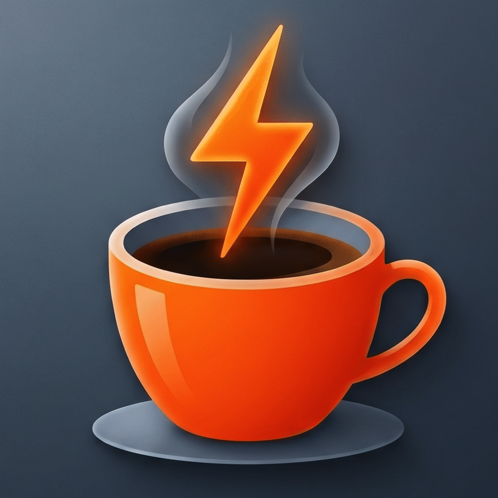

Halten Sie Ihren Mac wach.
Ganz ohne Kaffee.
Der minimalistische Schlaf-Verhinderungs-Assistent für macOS. Schlank, sandboxed, sicher. Ihr Mac bleibt wach, solange Sie es wollen.
☕️ Hauptfunktionen
Alles, was Sie zum Verhindern des Ruhezustands benötigen. Reduziert auf das Wesentliche.
Ein-Klick-Aktivierung
Ein Klick auf das Tassen-Symbol in der Menüleiste öffnet das Kontrollfenster zum schnellen Aktivieren oder Deaktivieren der Sleep-Prevention. Keine verschachtelten Menüs.
Flexible Timer-Optionen
Wählen Sie zwischen unbegrenztem Wachhalten (Standardmodus ∞) oder vordefinierten Zeitintervallen von 15 Minuten, 30 Minuten, 1 Stunde oder 2 Stunden.
Echtzeit-Countdown
Bei aktivem Timer zeigt die App eine sekundengenaue, gut lesbare Restzeitanzeige direkt im Popover der macOS-Menüleiste an. So behalten Sie die Zeit immer im Blick.
Autostart-Option
Dank nativer Option lässt sich die App direkt beim Systemstart im Hintergrund laden. Monitor-Koffein wartet geduldig in der Menüleiste auf seinen nächsten Einsatz.
Modern & Ressourcenschonend
Volle Optimierung für Apple Silicon (M1/M2/M3) und Intel-Prozessoren. Entwickelt mit modernen macOS APIs (@Observable und SMAppService) für minimalen Energieverbrauch.
Strikte Privatsphäre
Die App arbeitet zu 100% offline. Keine Telemetriedaten, kein Tracking, keine Werbung und keine Netzwerkverbindungen. Ihre Einstellungen bleiben privat.
🛠️ Technische Architektur
Monitor-Koffein integriert sich nahtlos und sicher in macOS. Durch die Verwendung moderner, empfohlener APIs wird eine lange Kompatibilität und hohe Systemstabilität gewährleistet.
-
•
IOKit Power Management: Registriert eine offizielle
IOPMAssertionCreateWithNamevom TypkIOPMAssertionTypeNoDisplaySleep, um den Ruhezustand des Monitors zu blockieren. Bei Deaktivierung wird die Ressource sauber viaIOPMAssertionReleasefreigegeben. -
•
SMAppService Autostart: Verwendet das moderne
ServiceManagement-Framework für die Anmeldung als Startobjekt. Keine veralteten Helper-Apps, volle Kompatibilität mit den neuesten macOS-Sicherheitsrichtlinien.
🛡️ Sicherheit & Sandbox
Als Entwicklungsstudio legt DirectValue Digital größten Wert auf Anwendungssicherheit und Ressourcenschonung.
-
•
App Sandbox: Die App läuft voll isoliert (
ENABLE_APP_SANDBOX = YES). Sie besitzt keinen Dateizugriff, keinen Netzwerkzugriff und benötigt keine Berechtigungen für Kamera, Mikrofon oder Ortung. -
•
Hardened Runtime: Zum Schutz vor Malware und Code-Injection-Angriffen ist die Hardened Runtime aktiv (
ENABLE_HARDENED_RUNTIME = YES).